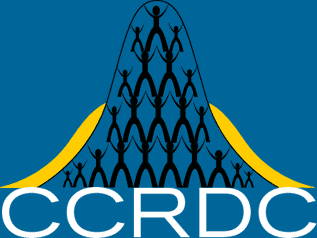

| service |
| home page |
|
|  | Training and advocacy through WVATS and its partnership with the West Virginia Advocates. . The West Virginia Assistive Technology System (WVATS) is funded by the U. Department of Education to increase awareness of and accessibility to assistive technology. Assistive technology is any device used to perform tasks that would otherwise be difficult or impossible. |